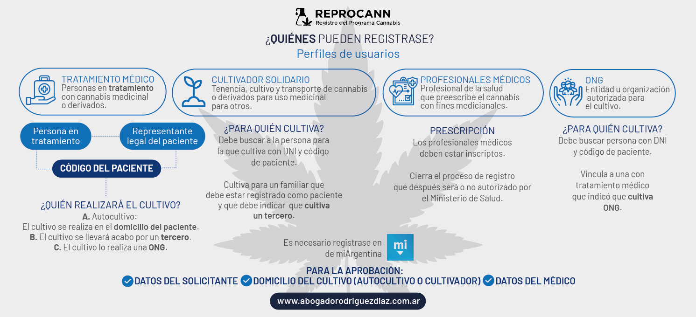

El REPROCANN es el Registro Nacional de Pacientes en Tratamiento con Cannabis creado a través del decreto 883/20, que regula la Ley N.º 27.350 ( Uso Medicinal de laPlanta de Cannabis y sus derivados) que permite a aquellas personas que cuenten conindicación médica solicitar la autorización para cultivar para sí, o mediante un tercero (cultivadora/or solidario/a u ONGs)
DATO: Este documento servirá “como prueba fehaciente y autosuficiente del cumplimiento de las condiciones establecidas” por las autoridades competentes y tendrá un “plazo de vigencia de 1 año desde la fecha de emisión”.
La autorización tiene una duracion de un año, luego se tiene que volver hacer la solicitud del REPROCANN nuevamente.